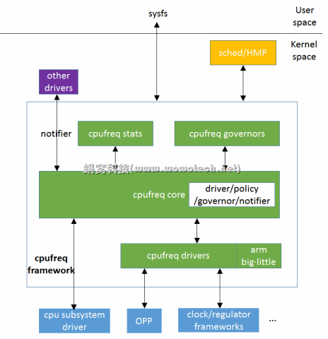

CPU Performance Scaling#
はじめに#
本資料は CPU Performance Scaling を要約し、補足を入れたものである。intel_pstate に関する情報は省略している。
The Concept of CPU Performance Scaling#
最近のプロセッサの大半は、CPUを異なる周波数/電圧構成間で切り替えたり、異なるP-stateにしたりできるハードウェアインタフェースがある。このインタフェースは通常、CPUをどのP-stateにするかを決定するために、必要なCPU能力を推定するアルゴリズムとともに使用される。システムの利用率は一般に時間とともに変化するため、これは定期的に繰り返し実行されなければならない。これを実現する活動は、CPUパフォーマンススケーリングまたはCPU周波数スケーリングと呼ばれる。
CPU Performance Scaling in Linux#
 (引用：linux cpufreq framework(1)_概述)
{kind=link}
Linuxカーネルは、CPUFreq core、scaling governor、scaling driverの3層のコードで構成されるCPUFreq (CPU Frequency scaling) サブシステムによって、CPUパフォーマンスのスケーリングをサポートしている。
- CPUFreq core：CPUパフォーマンススケーリングをサポートする全てのプラットフォームに対して、共通のコードインフラストラクチャとユーザ空間インタフェースを提供する。CPUFreq coreは、他のコンポーネントが動作するための基本的なフレームワークを定義する。
- scaling governor：必要なCPU能力を見積もるアルゴリズムを実装する。原則として、各governorは1つのスケーリングアルゴリズムを実装する。
- scaling driver：ハードウェアと通信する。scaling driverは、利用可能なP-stateに関する情報をscaling governorに提供し、プラットフォーム固有のハードウェアインタフェースにアクセスして、scaling governorの要求に応じてCPUのP-stateを変更する。
CPUFreq Policy Objects#
graph TB
A[[CPUFreq core]] -- pointer --> B[cpufreq_policy]
A -- pointer --> C[cpufreq_policy]
A -- pointer --> D[cpufreq_policy]
B --> E[cpu0]
C --> F[cpu1]
C --> G[cpu2]
D --> H[cpu3]P-state制御用のハードウェアインタフェースは複数のCPUで共有される可能性がある。例えば、同じレジスタが複数のCPUのP-stateを同時に制御するために使用される場合である。ハードウェアのP-state制御インタフェースを共有するCPUのセットは、 struct cpufreq_policy オブジェクトとして表現される。一貫性を保つため、指定されたセット内にCPUが1つしかない場合にも cpufreq_policy が使用される。
CPUFreq coreは、現在オフラインになっているCPUを含め、システム内の全てのCPUに対して cpufreq_policy オブジェクトへのポインタを保持する。複数のCPUが同じハードウェアP-state制御インタフェースを共有している場合、それらに対応する全てのポインタは同じ cpufreq_policy オブジェクトを指す。
CPUFreqは cpufreq_policy を基本データ型として使用し、ユーザ空間インタフェースの設計はポリシーの概念に基づいている。
CPU Initialization#
Note
以下では、明示的に別段の記載がない限り、"CPU "は常に "論理CPU "を意味し、"プロセッサ "という単語は、複数の論理CPUを含む可能性のある物理的な部分を指すために使用される
flowchart LR
A[CPUがready] --> B[CPUFreq core<br/>呼び出し]
B --> IF1{cpufreq_policyポインタ<br/>が設定されている?}
IF1 -->|Yes| D
IF1 -->|No| C[cpufreq_policyオブジェクトの<br/>作成 & 設定] --> D
D["driver->init(*cpufreq_policy)"]
D --> E["governor->init(*cpufreq_policy)"]
E --> F["governor->start()"]CPUFreqが動作するためには、scaling driverが登録されていなければならない。CPUがreadyになるとscaling driverを登録するためにCPUFreq coreが呼び出される。 CPUFreq coreが呼び出されると、与えられたCPUに対してポリシーポインタがすでに設定されているかどうかをチェックし、もしそうであれば、ポリシーオブジェクトの作成をスキップする。 そうでなければ、新しいポリシーオブジェクトが作成され、初期化される。 この時、同時にsysfsに新しいポリシーディレクトリが作成される。 与えられたCPUに対応するポリシーポインタは、メモリ内の新しいポリシーオブジェクトのアドレスに設定される。
次に、scaling driverの init() コールバックが、引数として渡された新しいCPUのポリシーポインタとともに呼び出される。このコールバックは、指定されたCPUのパフォーマンススケーリングハードウェアインタフェースを初期化し、呼び出されたポリシーオブジェクトが新しい場合、ハードウェアによってサポートされる最小および最大周波数、利用可能な周波数のテーブル、および同じポリシーに属すCPUのマスクなどのパラメータが設定される。
その後、ポリシーオブジェクトのポインタがgovernorの init() コールバックに渡され、与えられたポリシーを処理するために必要な全てのデータ構造が初期化される。governorは start() コールバックを呼び出すことで開始される。start() コールバックは与えられたポリシーに属す全てのオンラインCPUのCPU毎の利用率更新コールバックをCPUスケジューラに登録する。
利用率更新コールバックは、タスクのenqueue/dequeueのような重要なイベント時や、scheduler tickの各反復時、CPUの使用状況が変わる可能性がある時などに、スケジューラによって呼び出される。 利用率更新コールバックは、ポリシーに基づいてP-stateを決定するために必要な計算を行い、ハードウェアに変更を加えるようscaling driverを呼び出す。
Policy Interface in sysfs#


カーネルの初期化中に、CPUFreq coreは sys/devices/system/cpu/ の下に cpufreq ディレクトリを作成する。そのディレクトリには、CPUFreqコアによって管理されている各ポリシーオブジェクトに対する policyX サブディレクトリが含まれている。各 policyX ディレクトリは、 /sys/devices/system/cpu/cpuY/ 内のポリシーに紐づくCPUからcpufreqシンボリックリンクによって指されている。
各 policyX ディレクトリは、それぞれ対応するポリシーオブジェクトのCPUFreq動作を制御するためのポリシースペシフィックな属性 (ファイル) を含んでいる。
以下の表はそれらの属性の概要を説明したものである：
| Attributes | Descriptions |
|---|---|
affected_cpus |
このポリシーに属すオンラインCPUのリスト |
bios_limit |
BIOSがOSにCPU周波数に上限を適用するように指示した場合、その上限が格納される |
cpuinfo_cur_freq |
このポリシーに属すCPUの現在の動作周波数 [\(\mathrm{kHz}\)] |
cpuinfo_max_freq |
このポリシーに属すCPUの最大動作周波数 [\(\mathrm{kHz}\)] |
cpuinfo_min_freq |
このポリシーに属すCPUの最小動作周波数 [\(\mathrm{kHz}\)] |
cpuinfo_transition_latency |
このポリシーに属すCPUをあるP-stateから別のP-stateに切り替えるのにかかる時間 [ns] |
related_cpus |
このポリシーに属す全ての(オンライン&オフライン)CPUのリスト |
scaling_available_governors |
このポリシーにアタッチできるCPUFreq scaling governorのリスト |
scaling_cur_freq |
このポリシーに属す全てのCPUの現在の周波数 [\(\mathrm{kHz}\)] |
scaling_driver |
現在使用中のscaling driver |
scaling_governor |
このポリシーに現在アタッチされているscaling governor。書き込み可能で、書き込むと、このポリシーに新しいscaling governorがアタッチされる |
scaling_max_freq |
このポリシーに属すCPUの最大動作周波数 [\(\mathrm{kHz}\)]。書き込み可能で、書き込むと、新しい上限が設定される |
scaling_min_freq |
このポリシーに属すCPUの最小動作周波数 [\(\mathrm{kHz}\)]。書き込み可能で、書き込むと、新しい下限が設定される |
scaling_setspeed |
この属性は、userspace scaling governorがこのポリシーにアタッチされている場合にのみ機能する。書き込み可能で、書き込むと、新しい周波数が設定される |
Generic Scaling Governors#
CPUFreqは、全てのscaling driverで使用できる汎用scaling governorを提供する。scaling governorはポリシーオブジェクトにアタッチされ、異なるポリシーオブジェクトを異なるscaling governorで同時に処理できる。ポリシーオブジェクトのscaling governorは、sysfs の scaling_governor 属性によっていつでも変更できる。
governorによっては、実装されているスケーリングアルゴリズムを制御したり、微調整したりするために sysfs 属性を公開しているものがある。governorチューナブルと呼ばれるこれらの属性は、使用するscaling driverによって、グローバルまたはポリシーごとに設定できる。ドライバがgovernorチューナブルをポリシー単位で必要とする場合、governorチューナブルは各ポリシーディレクトリのサブディレクトリに配置される。そうでない場合は、/sys/devices/system/cpu/cpufreq/ 以下のサブディレクトリに配置される。いずれの場合も、governorチューナブルを含むサブディレクトリの名前は、それらを提供するgovernorの名前である。
以下では各汎用scaling governorの詳細を説明する。
performance#
ポリシーオブジェクトにアタッチされると、このgovernorは、そのポリシーの scaling_max_freq 属性の制限内で、最も高い周波数を要求する。
このリクエストは、 scaling_max_freq または scaling_min_freq ポリシーのリミットが変更される度に行われる。
powersave#
ポリシーオブジェクトにアタッチされると、このgovernorは、そのポリシーに対して、 scaling_min_freq ポリシー制限内の最低周波数を要求する。
このリクエストは、 scaling_max_freq または scaling_min_freq ポリシーのリミットが変更される度に行われる。
userspace#
このgovernorはそれ自身では何もしない。その代わり、ユーザがポリシーの scaling_setspeed 属性に書き込むことで、アタッチされているポリシーの CPU 周波数を設定できるようにする。
schedutil#
このgovernorは、CPUスケジューラから利用可能なCPU利用率データを使用する。一般にCPUスケジューラの一部とみなされるため、スケジューラの内部データ構造に直接アクセスできる。これは完全にスケジューラコンテキストで実行される。特定のCPUに対するこのgovernorの動作は、そのCPUの利用率更新コールバックを呼び出すスケジューリングクラスに依存する。
- RTスケジューリングクラス or デッドラインスケジューリングクラス： governorは、許容される最大値 (scaling_max_freq) まで周波数を増やす。
- CFSスケジューリングクラス： governorはCPU利用率の推定値として、指定されたCPUのルート制御グループの PELT (Per-Entity Load Tracking) メトリック を使用する。次に、適用する新しいCPU周波数が、以下の式に従って計算される。
ここで、utilはPELT数、 \(\max\) はutilの理論上の最大値、 \(\mathrm{f}_{0}\) は与えられたポリシーで可能なCPU周波数の最大値 (PELT数が周波数に依存しない場合)、または現在のCPU周波数 (そうでない場合)のいずれかである。
このgovernorはまた、「IO-wait boosting」と呼ばれる、直近でI/O待ちをしていたタスクのCPU周波数を一時的に引き上げるメカニズムも採用している。これは、SCHED_CPUFREQ_IOWAITフラグがスケジューラからgovernorコールバックに渡されたときに発生するもので、このフラグによって、周波数がすぐに許容最大値まで上がり、その後、時間の経過とともに上記の式で返される値に引き戻される。
このgovernorは、1つのチューナブルだけを公開する：
rate_limit_us
governor計算の2つの連続した実行の間に経過しなければならない最小時間 (マイクロ秒単位) (デフォルト：scaling driverの遷移レイテンシの1000倍)。このチューナブルにより、governorのスケジューラコンテキストオーバーヘッドを調整できる。
このgovernorは、一般に、旧来の ondemand governorや conservative governorに取って代わると考えられている。なぜなら、このgovernorは、よりシンプルでCPUスケジューラと緊密に統合されており、CPUコンテキストスイッチなどのオーバーヘッドが少なく、スケジューラ独自のCPU利用率メトリックを使用するため、原則的に、このgovernorの決定が、スケジューラの他の部分の決定と矛盾することはないからである。
Note
上記理由により、本ドキュメントでは、ondemand 及び conservative governorの説明を省略する。
Frequency Boost Support#
Background#
プロセッサの中には、チップ全体が十分に利用されておらず、意図した熱や電力のバジェットを下回っている場合など、特定の条件下で、一部のコアの動作周波数を一時的に引き上げるメカニズムをサポートしているものがある。
この機能は、ベンダーによって異なる名称が使われている。インテルプロセッサでは「ターボブースト」、AMDでは「ターボコア」または「コアパフォーマンスブースト」と呼ばれている。また、ベンダーによって実装方法も異なる。ここでは簡潔に「周波数ブースト」という用語を使用する。
周波数ブーストメカニズムには、ハードウェアベースとソフトウェアベースがある。ハードウェアベース (x86など) の場合、ブーストをトリガするかどうかの判断はハードウェアが行う。ソフトウェアベース (ARMなど) の場合は、scaling driverが周波数ブーストをトリガするかどうかとそのタイミングを決定する。
The boost File in sysfs#
このファイルは /sys/devices/system/cpu/cpufreq/boost にあり、システム全体の周波数ブースト設定を制御する。基礎となるscaling driverが周波数ブーストメカニズムをサポートしていない、
またはサポートしているが、intel_pstateのような周波数ブーストを制御するためのドライバ固有のインタフェースを提供している場合は、このファイルは存在しない。このファイルに書き込める値は 0 と 1 だけである。
1の場合：周波数ブーストメカニズムが有効になる。これは、ハードウェアがブーストをトリガできる状態 (ハードウェアベースの場合) になるか、ソフトウェアがブーストをトリガできる状態 (ソフトウェアベースの場合) になることを意味する。0の場合：周波数ブーストメカニズムは無効となり、まったく使用できない。